incidence implements functions and classes to compute, handle, visualise and model incidences from dates data. This vignette provides an overview of current features. It largely reproduces the content of REAME.md.
# Installing the package
To install the current stable, CRAN version of the package, type:
install.packages("incidence")To benefit from the latest features and bug fixes, install the development, github version of the package using:
devtools::install_github("reconhub/incidence")Note that this requires the package devtools installed.
# What does it do?
The main functions of the package include:
incidence: compute incidence from dates in various formats; any fixed time interval can be used; the returned object is an instance of the (S3) class incidence.plot: this method (see ?plot.incidence for details) plots incidence objects, and can also add predictions of the model(s) contained in an incidence_fit object (or a list of such objects).fit: fit one or two exponential models (i.e. linear regression on log-incidence) to an incidence object; two models are calibrated only if a date is provided to split the time series in two (argument split); this is typically useful to model the two phases of exponential growth, and decrease of an outbreak; each model returned is an instance of the (S3) class incidence_fit, each of which contains various useful information (e.g. growth rate r, doubling/halving time, predictions and confidence intervals).fit_optim_split: finds the optimal date to split the time series in two, typically around the peak of the epidemic.[: lower-level subsetan of incidence objects, permiting to specify which dates and groups to retain; uses a syntax similar to matrices, i.e. x[i, j], where x is the incidence object, i a subset of dates, and j a subset of groups.subset: subset an incidence object by specifying a time window.pool: pool incidence from different groups into one global incidence time series.
# Worked example: simulated Ebola outbreak
This example uses the simulated Ebola Virus Disease (EVD) outbreak from the package outbreaks. We will compute incidence for various time steps, calibrate two exponential models around the peak of the epidemic, and analyse the results.
First, we load the data:
library(outbreaks)
library(ggplot2)
library(incidence)
dat <- ebola.sim$linelist$date.of.onset
class(dat)
#> [1] "Date"
head(dat)
#> [1] "2014-04-07" "2014-04-15" "2014-04-21" "2014-04-27" "2014-04-26"
#> [6] "2014-04-25"We compute the daily incidence:
i <- incidence(dat)
i
#> <incidence object>
#> [5888 cases from days 2014-04-07 to 2015-04-30]
#>
#> $counts: matrix with 389 rows and 1 columns
#> $n: 5888 cases in total
#> $dates: 389 dates marking the left-side of bins
#> $interval: 1 day
#> $timespan: 389 days
plot(i)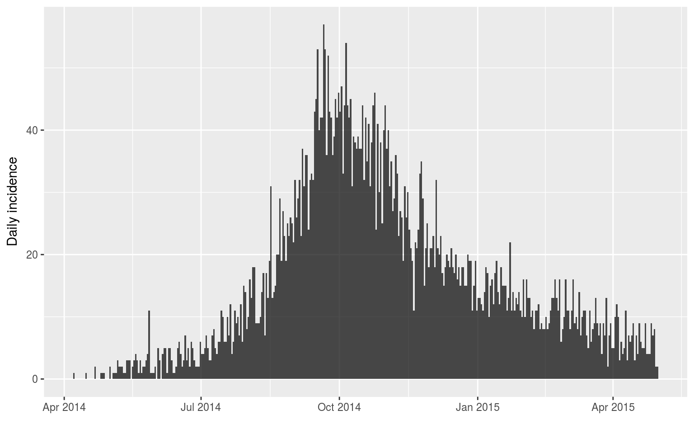
The daily incidence is quite noisy, but we can easily compute other incidence using larger time intervals:
## weekly
i.7 <- incidence(dat, interval=7)
plot(i.7)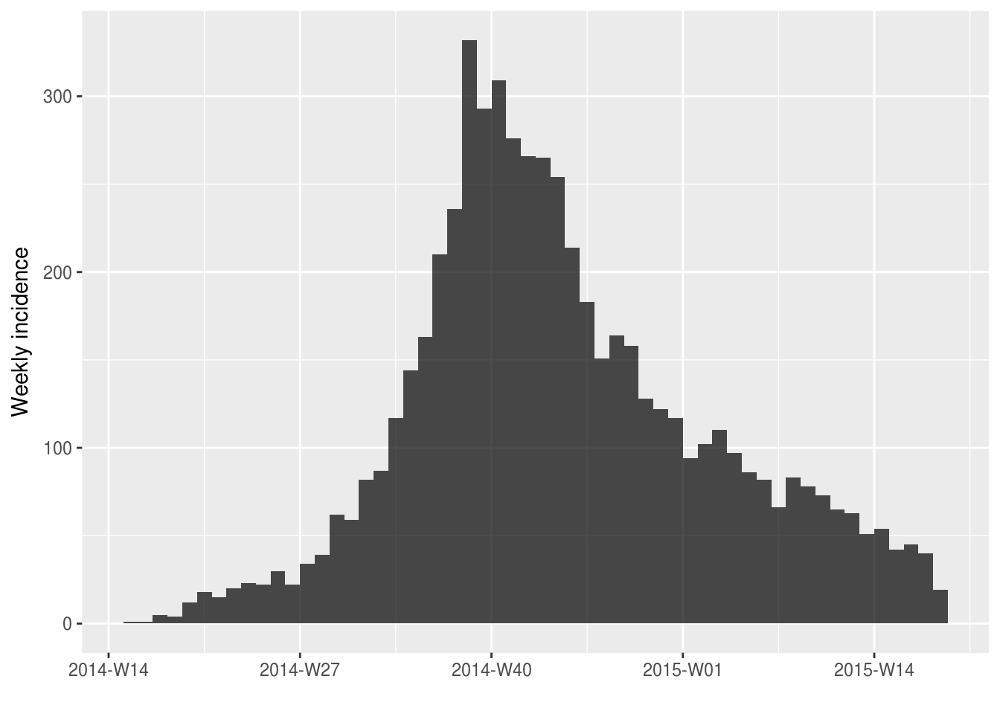
## bi-weekly
i.14 <- incidence(dat, interval=14)
plot(i.14, border = "white")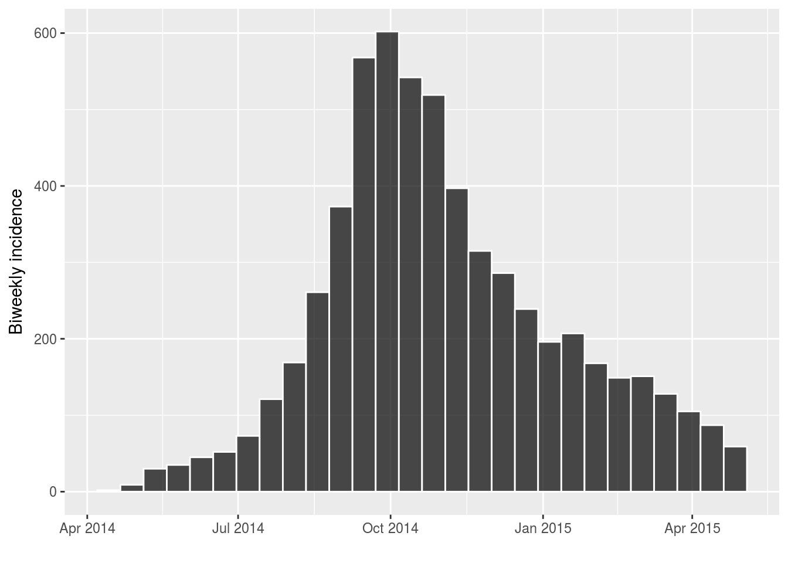
## period of 30 days
i.30 <- incidence(dat, interval=30)
plot(i.30, border = "white")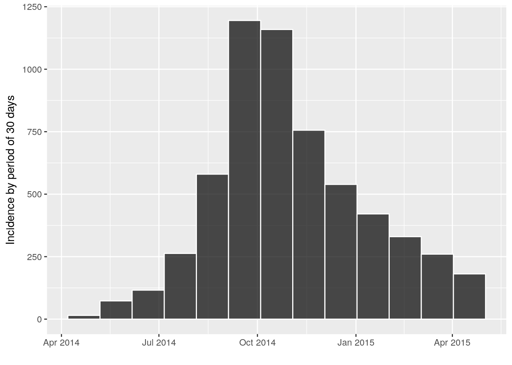
incidence can also compute incidence by specified groups using the groups argument. For instance, we can compute incidence by gender:
i.7.sex <- incidence(dat, interval=7, groups = ebola.sim$linelist$gender)
i.7.sex
#> <incidence object>
#> [5888 cases from days 2014-04-07 to 2015-04-27]
#> [2 groups: f, m]
#>
#> $counts: matrix with 56 rows and 2 columns
#> $n: 5888 cases in total
#> $dates: 56 dates marking the left-side of bins
#> $interval: 7 days
#> $timespan: 386 days
plot(i.7.sex, stack = TRUE, border = "grey")We can do the same for hospitals, using the ‘clean’ version of the dataset, with some customization of the legend:
i.7.hosp <- with(ebola.sim.clean$linelist,
incidence(date.of.onset, interval=7, groups = hospital))
i.7.hosp
#> <incidence object>
#> [5829 cases from days 2014-04-07 to 2015-04-27]
#> [6 groups: Connaught Hospital, Military Hospital, NA, other, Princess Christian Maternity Hospital (PCMH), Rokupa Hospital]
#>
#> $counts: matrix with 56 rows and 6 columns
#> $n: 5829 cases in total
#> $dates: 56 dates marking the left-side of bins
#> $interval: 7 days
#> $timespan: 386 days
head(i.7.hosp$counts)
#> Connaught Hospital Military Hospital NA other
#> [1,] 0 1 0 0
#> [2,] 1 0 0 0
#> [3,] 0 0 2 3
#> [4,] 1 0 1 0
#> [5,] 3 5 1 1
#> [6,] 2 4 4 5
#> Princess Christian Maternity Hospital (PCMH) Rokupa Hospital
#> [1,] 0 0
#> [2,] 0 0
#> [3,] 0 0
#> [4,] 1 1
#> [5,] 1 1
#> [6,] 1 1
plot(i.7.hosp, stack=TRUE) +
theme(legend.position= "top") +
labs(fill="")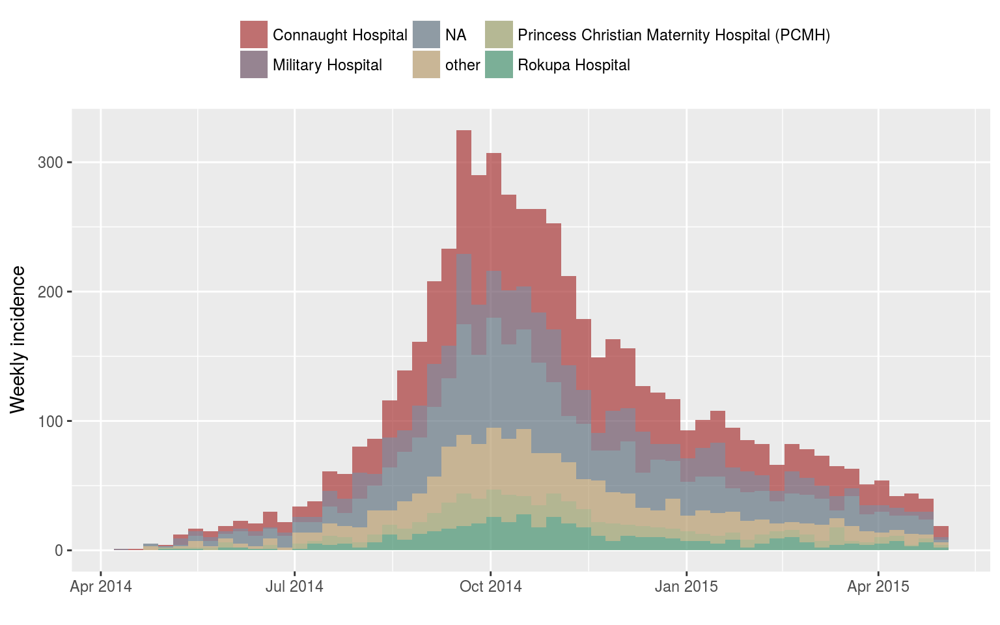
incidence objectsincidence objects can be manipulated easily. The [ operator implements subetting of dates (first argument) and groups (second argument). For instance, to keep only the peak of the distribution:
i[100:250]
#> <incidence object>
#> [4103 cases from days 2014-07-15 to 2014-12-12]
#>
#> $counts: matrix with 151 rows and 1 columns
#> $n: 4103 cases in total
#> $dates: 151 dates marking the left-side of bins
#> $interval: 1 day
#> $timespan: 151 days
plot(i[100:250])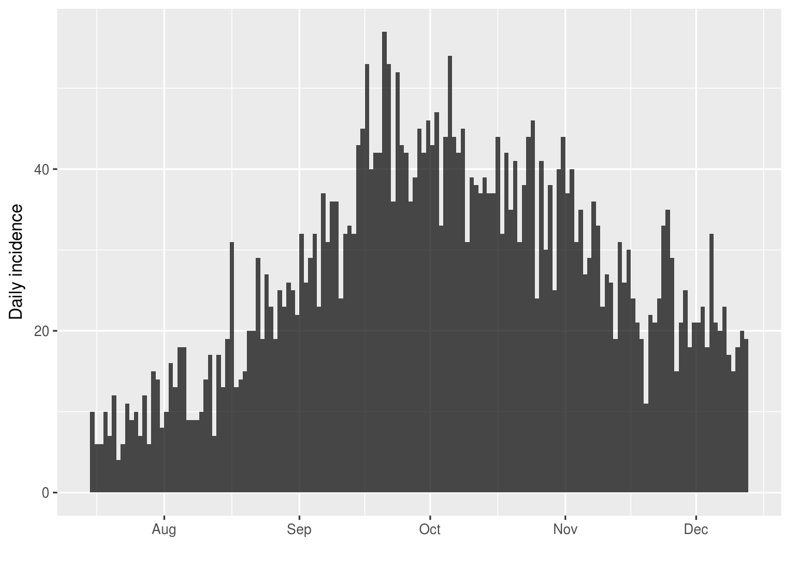
Or to keep every other week:
i.7[c(TRUE,FALSE)]
#> <incidence object>
#> [2891 cases from days 2014-04-07 to 2015-04-20]
#>
#> $counts: matrix with 28 rows and 1 columns
#> $n: 2891 cases in total
#> $dates: 28 dates marking the left-side of bins
#> $interval: 7 days
#> $timespan: 379 days
plot(i.7[c(TRUE,FALSE)])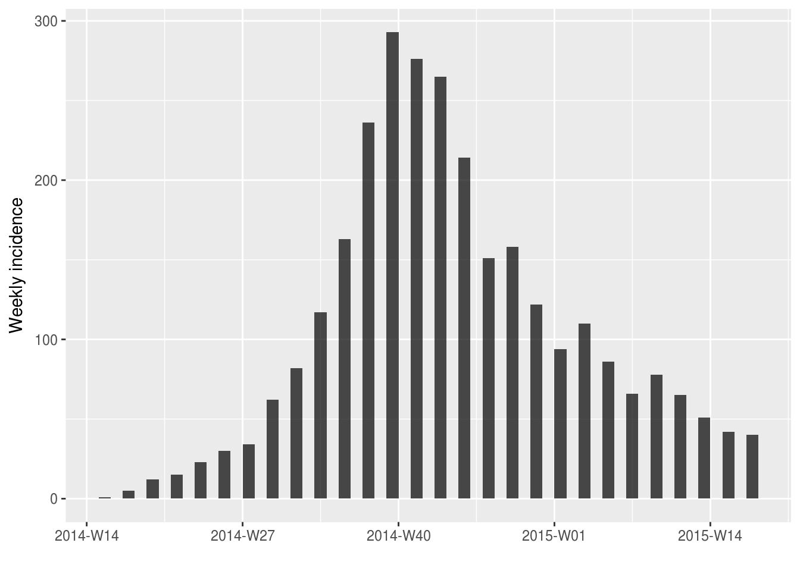
Some temporal subsetting can be even simpler using subset, which permits to retain data within a specified time window:
i.tail <- subset(i, from=as.Date("2015-01-01"))
i.tail
#> <incidence object>
#> [1205 cases from days 2015-01-01 to 2015-04-30]
#>
#> $counts: matrix with 120 rows and 1 columns
#> $n: 1205 cases in total
#> $dates: 120 dates marking the left-side of bins
#> $interval: 1 day
#> $timespan: 120 days
plot(i.tail, border="white")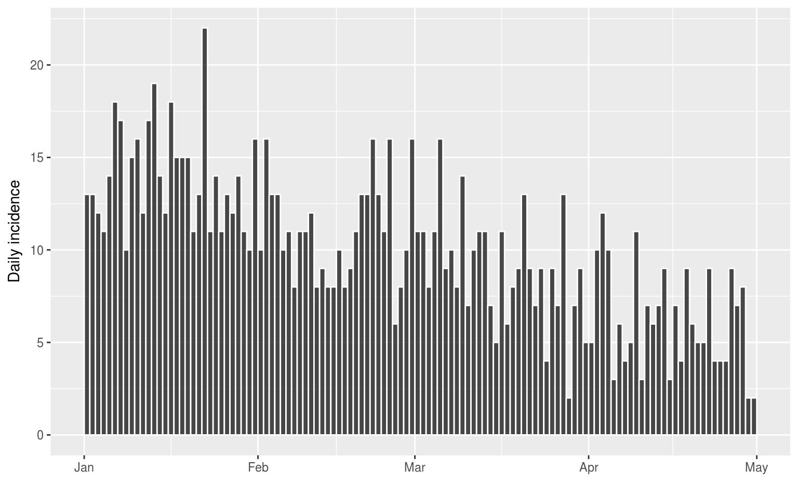
Subsetting groups can also matter. For instance, let’s try and visualise the incidence based on onset of symptoms by outcome:
i.7.outcome <- incidence(dat, 7, groups=ebola.sim$linelist$outcome)
i.7.outcome
#> <incidence object>
#> [5888 cases from days 2014-04-07 to 2015-04-27]
#> [3 groups: Death, NA, Recover]
#>
#> $counts: matrix with 56 rows and 3 columns
#> $n: 5888 cases in total
#> $dates: 56 dates marking the left-side of bins
#> $interval: 7 days
#> $timespan: 386 days
plot(i.7.outcome, stack = TRUE, border = "grey")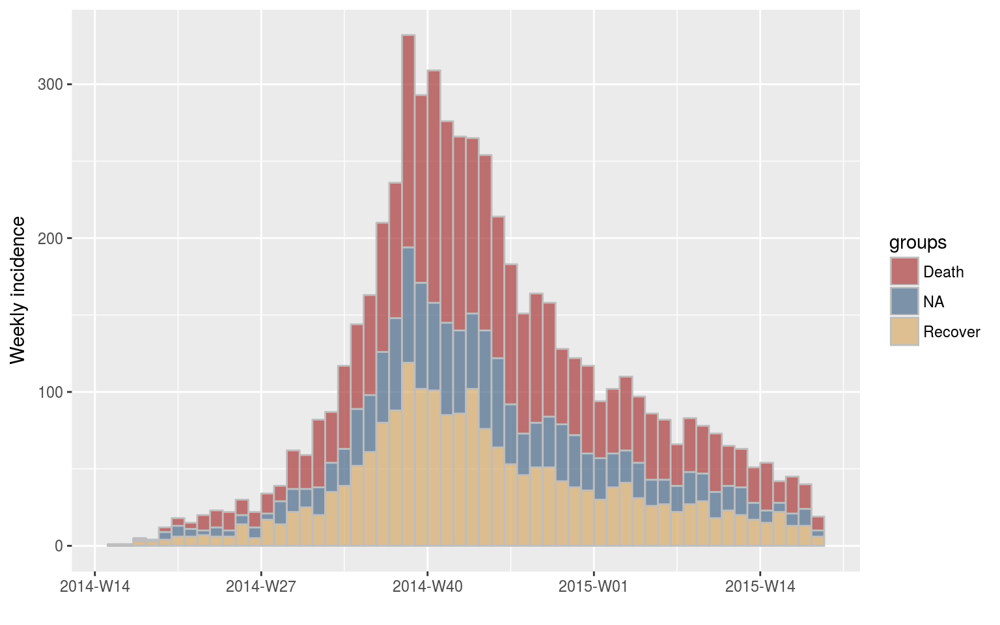
By default, incidence treats missing data (NA) as a separate group (see argument na_as_group). We could disable this to retain only known outcomes, but alternatively we can simply subset the object to exclude the last (3rd) group:
i.7.outcome[,1:2]
#> <incidence object>
#> [3905 cases from days 2014-04-07 to 2015-04-27]
#> [2 groups: Death, NA]
#>
#> $counts: matrix with 56 rows and 2 columns
#> $n: 3905 cases in total
#> $dates: 56 dates marking the left-side of bins
#> $interval: 7 days
#> $timespan: 386 days
plot(i.7.outcome[,1:2], stack = TRUE, border = "grey")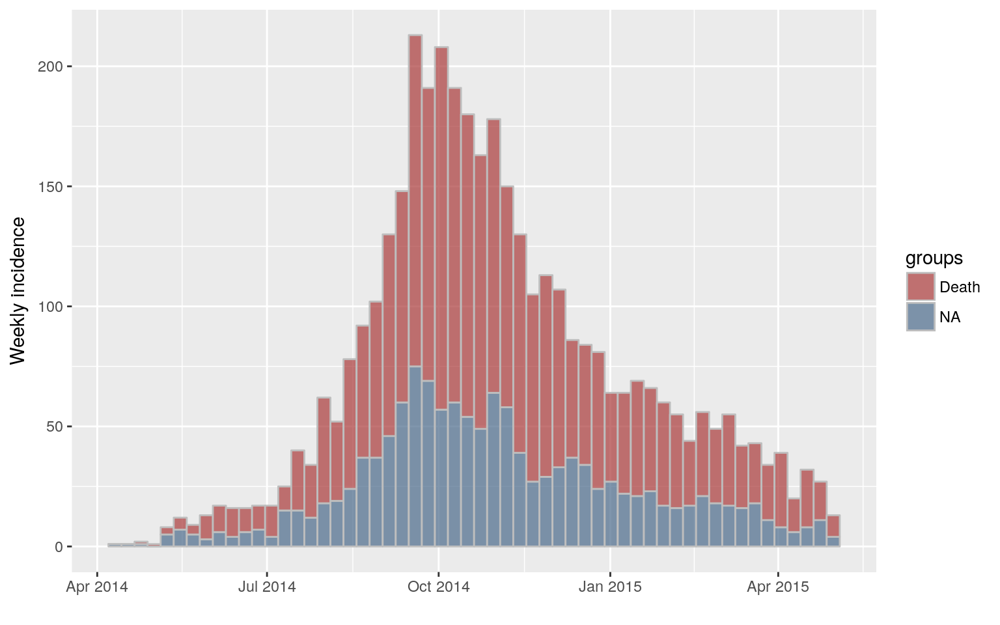
Groups can also be collapsed into a single time series using pool:
i.pooled <- pool(i.7.outcome)
i.pooled
#> <incidence object>
#> [5888 cases from days 2014-04-07 to 2015-04-27]
#>
#> $counts: matrix with 56 rows and 1 columns
#> $n: 5888 cases in total
#> $dates: 56 dates marking the left-side of bins
#> $interval: 7 days
#> $timespan: 386 days
identical(i.7$counts, i.pooled$counts)
#> [1] TRUEIncidence data, excluding zeros, can be modelled using log-linear regression of the form: log(y) = r x t + b
where y is the incidence, r is the growth rate, t is the number of days since a specific point in time (typically the start of the outbreak), and b is the intercept.
Such model can be fitted to any incidence object using fit. Of course, a single log-linear model is not sufficient for modelling our time series, as there is clearly an growing and a decreasing phase. As a start, we can calibrate a model on the first 20 weeks of the epidemic:
plot(i.7[1:20])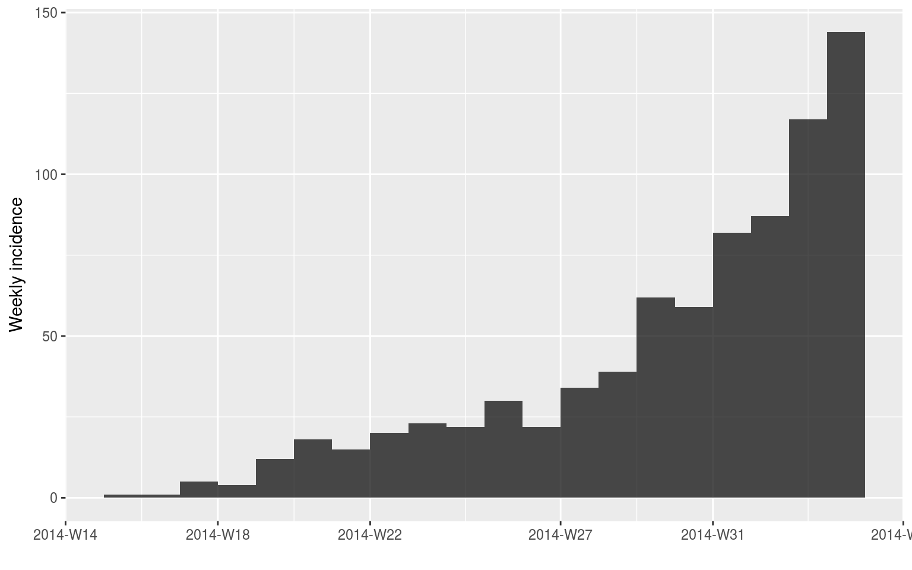
early.fit <- fit(i.7[1:20])
early.fit
#> <incidence_fit object>
#>
#> $lm: regression of log-incidence over time
#>
#> $info: list containing the following items:
#> $r (daily growth rate):
#> [1] 0.03175771
#>
#> $r.conf (confidence interval):
#> 2.5 % 97.5 %
#> [1,] 0.02596229 0.03755314
#>
#> $doubling (doubling time in days):
#> [1] 21.8261
#>
#> $doubling.conf (confidence interval):
#> 2.5 % 97.5 %
#> [1,] 18.45777 26.69823
#>
#> $pred: data.frame of incidence predictions (20 rows, 5 columns)The resulting objects can be plotted, in which case the prediction and its confidence interval is displayed:
plot(early.fit)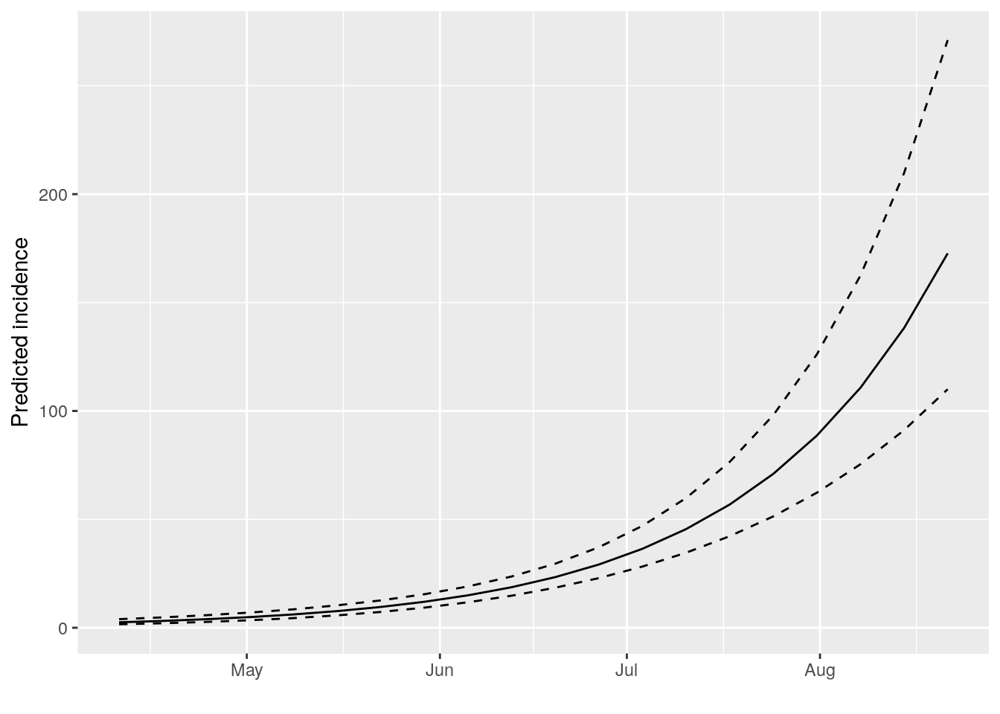
However, a better way to display these predictions is adding them to the incidence plot using the argument fit:
plot(i.7[1:20], fit = early.fit)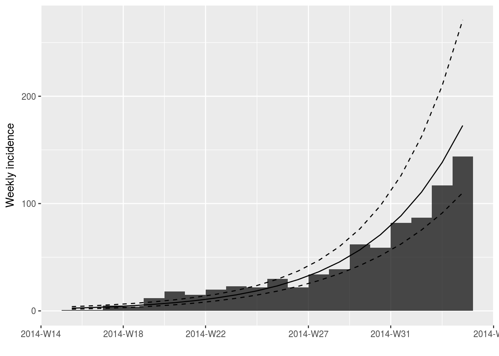
In this case, we would ideally like to fit two models, before and after the peak of the epidemic. This is possible using the following approach, if you know what date to use to split the data in two phases:
fit.both <- fit(i.7, split=as.Date("2014-10-15"))
fit.both
#> $before
#> <incidence_fit object>
#>
#> $lm: regression of log-incidence over time
#>
#> $info: list containing the following items:
#> $r (daily growth rate):
#> [1] 0.02741985
#>
#> $r.conf (confidence interval):
#> 2.5 % 97.5 %
#> [1,] 0.02407933 0.03076038
#>
#> $doubling (doubling time in days):
#> [1] 25.27902
#>
#> $doubling.conf (confidence interval):
#> 2.5 % 97.5 %
#> [1,] 22.53377 28.78598
#>
#> $pred: data.frame of incidence predictions (28 rows, 5 columns)
#>
#> $after
#> <incidence_fit object>
#>
#> $lm: regression of log-incidence over time
#>
#> $info: list containing the following items:
#> $r (daily growth rate):
#> [1] -0.01014465
#>
#> $r.conf (confidence interval):
#> 2.5 % 97.5 %
#> [1,] -0.01127733 -0.009011981
#>
#> $halving (halving time in days):
#> [1] 68.32636
#>
#> $halving.conf (confidence interval):
#> 2.5 % 97.5 %
#> [1,] 61.46379 76.91397
#>
#> $pred: data.frame of incidence predictions (28 rows, 5 columns)
plot(i.7, fit=fit.both)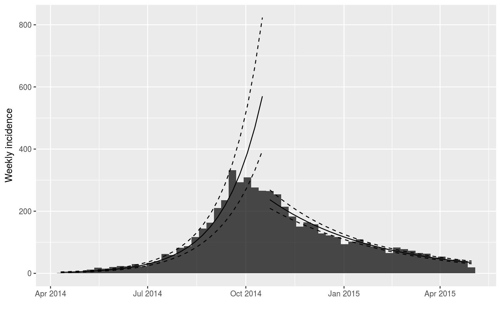
This is much better, but the splitting date is not completely optimal. To look for the best possible splitting date (i.e. the one maximizing the average fit of both models), we use:
best.fit <- fit_optim_split(i.7)
best.fit
#> $df
#> dates mean.R2
#> 1 2014-08-04 0.7650406
#> 2 2014-08-11 0.8203351
#> 3 2014-08-18 0.8598316
#> 4 2014-08-25 0.8882682
#> 5 2014-09-01 0.9120857
#> 6 2014-09-08 0.9246023
#> 7 2014-09-15 0.9338797
#> 8 2014-09-22 0.9339813
#> 9 2014-09-29 0.9333246
#> 10 2014-10-06 0.9291131
#> 11 2014-10-13 0.9232523
#> 12 2014-10-20 0.9160439
#> 13 2014-10-27 0.9071665
#>
#> $split
#> [1] "2014-09-22"
#>
#> $fit
#> $fit$before
#> <incidence_fit object>
#>
#> $lm: regression of log-incidence over time
#>
#> $info: list containing the following items:
#> $r (daily growth rate):
#> [1] 0.02982209
#>
#> $r.conf (confidence interval):
#> 2.5 % 97.5 %
#> [1,] 0.02608945 0.03355474
#>
#> $doubling (doubling time in days):
#> [1] 23.24274
#>
#> $doubling.conf (confidence interval):
#> 2.5 % 97.5 %
#> [1,] 20.65721 26.5681
#>
#> $pred: data.frame of incidence predictions (25 rows, 5 columns)
#>
#> $fit$after
#> <incidence_fit object>
#>
#> $lm: regression of log-incidence over time
#>
#> $info: list containing the following items:
#> $r (daily growth rate):
#> [1] -0.01016191
#>
#> $r.conf (confidence interval):
#> 2.5 % 97.5 %
#> [1,] -0.01102526 -0.009298561
#>
#> $halving (halving time in days):
#> [1] 68.21031
#>
#> $halving.conf (confidence interval):
#> 2.5 % 97.5 %
#> [1,] 62.86899 74.54349
#>
#> $pred: data.frame of incidence predictions (32 rows, 5 columns)
#>
#>
#> $plot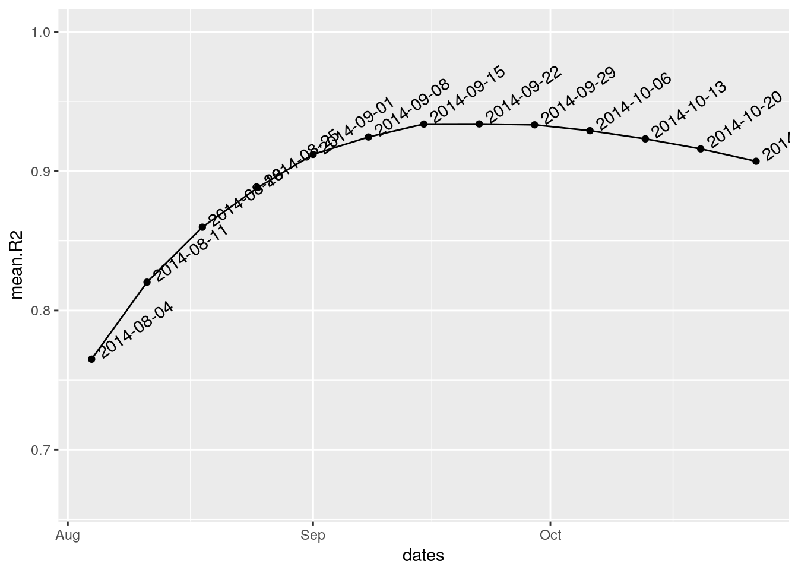
plot(i.7, fit=best.fit$fit)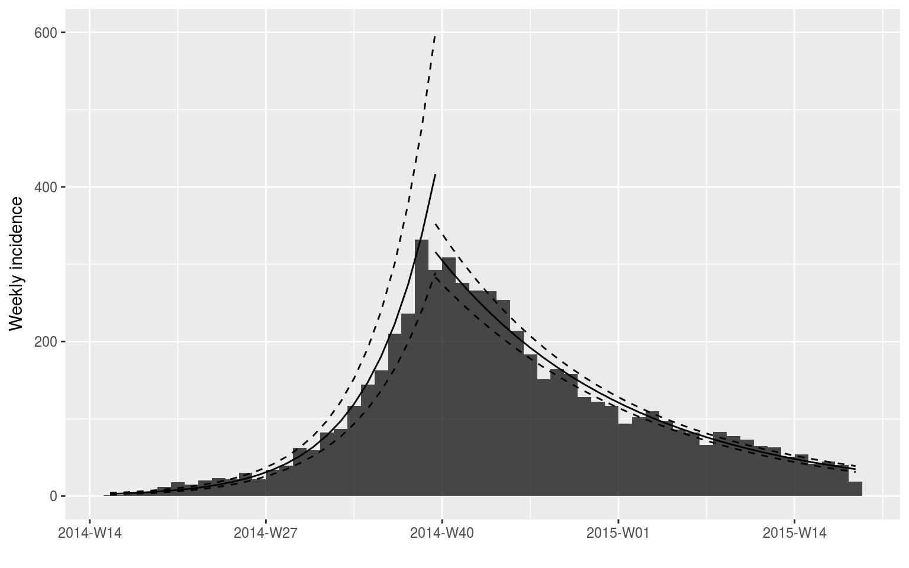
These models are very good approximation of these data, showing a doubling time of 23.2 days during the first phase, and a halving time of 68.2 days during the second.
Note that fit will also take groups into account if incidence has been computed for several groups:
best.fit2 <- fit_optim_split(i.7.sex)$fit
best.fit2
#> $before
#> <incidence_fit object>
#>
#> $lm: regression of log-incidence over time
#>
#> $info: list containing the following items:
#> $r (daily growth rate):
#> f m
#> 0.02381854 0.02640719
#>
#> $r.conf (confidence interval):
#> 2.5 % 97.5 %
#> f 0.02097832 0.02665876
#> m 0.01955031 0.03326408
#>
#> $doubling (doubling time in days):
#> f m
#> 29.10116 26.24842
#>
#> $doubling.conf (confidence interval):
#> 2.5 % 97.5 %
#> f 26.00073 33.04111
#> m 20.83771 35.45454
#>
#> $pred: data.frame of incidence predictions (46 rows, 6 columns)
#>
#> $after
#> <incidence_fit object>
#>
#> $lm: regression of log-incidence over time
#>
#> $info: list containing the following items:
#> $r (daily growth rate):
#> f m
#> -0.01002305 -0.01056026
#>
#> $r.conf (confidence interval):
#> 2.5 % 97.5 %
#> f -0.01110163 -0.008944473
#> m -0.01316417 -0.007956340
#>
#> $halving (halving time in days):
#> f m
#> 69.15531 65.63734
#>
#> $halving.conf (confidence interval):
#> 2.5 % 97.5 %
#> f 62.43653 77.49447
#> m 52.65406 87.11885
#>
#> $pred: data.frame of incidence predictions (62 rows, 6 columns)
plot(i.7.sex, fit=best.fit2)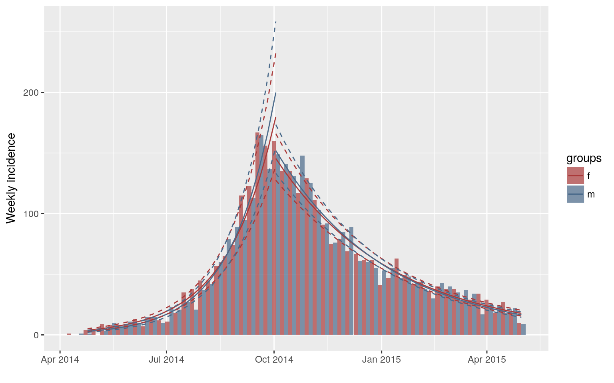